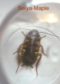
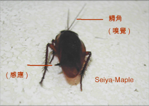
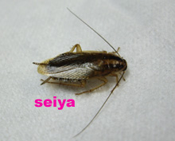
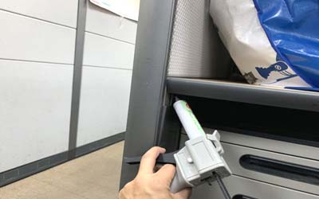

About Ours Application



古生物-人類的前輩,蟑螂又稱蜚蠊,,古生代蜚蠊紀(石碳紀),牠在地球已有3億年的歷史了,也就是說在古老的恐龍時代 之前就已存在,並且經歷過冰河期.乾燥酷暑,在地球之生物演化未被淘汰,可見得此 昆蟲生命力及活動力相當之強,牠喜歡居住垃圾堆.排水溝等骯髒地方,因此極易散播生消化系統之傳染疾病。
牠體外可攜帶的病菌達到數十種以上,包括鼠疫桿菌.赤痢菌.傷寒菌.結核菌.沙門式菌等。
蟑螂已為最重要的過敏原之一，蟑螂本身及牠所分泌物或排泄物,其蛋白質為過敏原,會引起過敏反應，特別於小朋友身上,而且它是國內第二大過敏源。(第一過敏原為塵螨)
牠晝伏夜出,雜食性.耐肌...甚至經紫外線照射一星期也能存活,又因其神經細統為散漫神經系,各神經控制各局部之反應,因此將其頭砍斷,尚可活數日之久(高等動物為集中神經系統).所以稱牠為小強,可說是名正言順。

昆蟲綱(Insecta)-蜚蠊目-蟑螂,是屬漸進變態昆蟲,其生活史包含了卵(Egg).若蟲(Nymph).成蟲(Adult)三部份,不同品種蟑螂之繁殖速度與數量均不太相同,例如一對德國蟑螂在無天敵.病害.食物充足下,一年可繁殖成數萬隻後代，美洲蟑螂大約少一半，美洲蟑螂的平均壽命是 450 天，德國蟑螂是 95 ~ 142 天,
在台灣以德國蟑螂繁殖與適應及抗藥能力較強,事實上牠是 源產來自非洲並非德國,蟑螂雖有翅膀,只有極少數會短暫的飛行. 蟑螂可棲息環境，一般是位於較溫暖潮濕之區域， 但只要有人活動處均可存活,重北極圈人類活動房內至沙漠都有其蹤跡,蟑螂大部份為夜食性,.背地性(倒掛).自制與再生.,雜食.耐肌.並且很容易適應環境,是我們人類的老前輩,
他的食物可涵蓋各種食品、排泄物、分泌物、餿水、衣物、毛髮、皮膚屑、紙、昆蟲動物屍體等等。
在台灣每年6-9月為蟑螂的高鋒期,市區尤其是在晚間水溝孔最多,秋冬季則遞減.但基本上以台灣之氣候,一年四季都為其適合生長環境

蟑螂身體可分為
頭:從左圖可看出其頭部很小,其嘴巴(口器)為咀嚼式口器,強有力的牙齒可咬損塑膠及衣物,觸角細長具有偵測氣味及震動能力.
胸:中胸有一對翅,稱之為翅覆,後胸也有有一對翅,
腹:腹尾有尾毛,是偵測細微空氣中的流動,也是逃避敵人的最佳利器.
蟑螂之血液與體液混合為開放式循環,其消化器官為前.中.後腸,其糞便可分泌費洛蒙,偶引誘同伴之功能.利於群聚繁殖.其眼已退化,具紅外線辨視物體能力,能抵抗比人類更高之輻射能力
台灣本島大部份的蟑螂都是外來種,這些蟑螂適應力強,目前各地都可見其蹤影,其中近幾年都會區尤其室內以德國蟑螂最為多,在台灣常見的蟑螂有美洲蟑螂(體長35-42mm),棕色蟑螂(體長25-30mm),澳洲蟑螂(體長25-33mm吃素),德國蟑螂(體長10-15mm),這些都是目前國內最大的族群.其中 較常見於室外之美洲蟑螂具有孤雌生殖(parthenogenesis)能力,也就是說不需要雄性個體交配，單獨的雌性也可以通過複製自身的DNA進行繁殖,惟產下卵後孵化都成了雌性.

影響蟑螂之生長因素有食物.水.溫度.濕度.海拔高度等因子.
物理方式防治就是控制生長因子,因此於環境清潔與阻隔為優先步驟.其中阻隔就是在其入侵處予以預防入侵.比如說在排水蓋上加裝網,或是使防蟑螂排水孔槽.另外在食物廚餘部分應保持密..等等方法
量多時(地面到處都可看到)必須採快速消滅與忌避方法,如蒸氣,熱水.甚至可用界面活性劑之清潔劑噴灑在其身上,可讓讓其窒息,或是使用化學法,使用殺蟲劑噴灑速殺
生物防治法:螳螂.蓋斑鬥魚.白額高腳蛛.豬籠草等做消滅,這些基本比較適合郊區
香辛辣物作忌避,但其效果有限; 天然樟腦作忌避,取得不易價格昂貴,現今全世界樟腦丸(油)絕大多數為化學製品;天然費洛蒙做引誘,但其取得不易價格昂貴.

蟑螂消毒化學法
一般賣場可買到藥劑可分餌劑與煙霧劑,噴霧罐, 餌劑使用於防治或蟲害狀況少時之誘殺,效果良好,使用時須點在角落為主,煙霧劑(水煙)使用時需密閉門窗4小時,將門櫃開啟,可速殺。
噴劑使用於蟲害狀況多時之速殺.在使用殺虫劑前.注意保 存期限，使用時帶拋棄式手套,在上風處噴灑.並且帶需要戴上活性碳口罩。(一般防疫口罩是無效)
使用噴劑時,重點噴灑區包含各排水孔內.水溝內.冰箱.垃圾桶.飲水機.流理臺下方
使用化學藥劑,雖是最方便的方法,但不是最有效的方法,應該在化學法後,使用物理法來控制蟑螂,
目前市面上之環境用藥每3-5年就必需換新藥,原因是 部份種類之蟑螂產生抗藥性,這都是我們人類造成的,因此我們應該學習歐盟 之先進方法,盡量使用物理法(環淨改善)來控制蟑螂.以控制觀念來防治較能達到好效果,並減少對環境污染